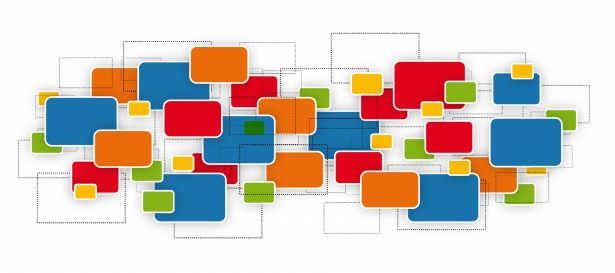

Alessandro Pasotti
@elpaso

La suite, grazie alla forte integrazione con gli strumenti di editing di QGIS, permette di predisporre gestionali cartografici web anche ad accesso condiviso.
Grazie alla sua duttilite e impiegata da numerosi enti: Pubbliche Amministrazioni, Enti Parco, Enti di Ricerca e studi professionali.
L'integrazione con le API QGIS Processing consente inoltre la realizzazione di strumenti dedicati all'analisi geografica online.
G3W-SUITE e uno strumento altamente adattabile, grazie a funzionalite estese e forte plasticite.
Una soluzione ideale da proporre ai clienti o usare come strumento nelle attivite di consulenza.
Unisciti alla rete di aziende che propongono G3W-SUITE nel mondo della cartografia web.
Consulenza professionale per deploy e ottimizzazione dell'applicativo in diverse infrastrutture SIT.
Assistenza tecnica per l'implementazione di soluzioni WebGIS open source basate su QGIS e G3W-SUITE.

Soluzioni personalizzate, basate su plugin dedicati, per soddisfare esigenze specifiche.

Per informazioni sulla partnership
Contattaci per la partnershipGis3W fornisce supporto per la soluzione Mergin Maps dedicata alla raccolta dati su campo basata su QGIS.

Profili GitHub dei contributori del progetto.